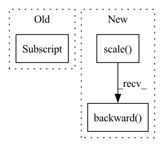

Pattern ID :9456

Before Change
loss_bbox_agg += loss_dict["bbox"].item()
loss_giou_agg += loss_dict["giou"].item()
loss_cls_agg += loss_dict["cls"].item()
loss_peak_agg += loss_dict["peak"].item()
loss = loss_agg / len(self._train_loader)
loss_bbox = loss_bbox_agg / len(self._train_loader)
After Change
loss_abs += loss_val * self._config["loss_coefs"][loss_key.split("_")[0]]
self._optimizer.zero_grad()
self._scaler.scale(loss_abs).backward()
// Clip grads to counter exploding grads
max_norm = self._config["clip_max_norm"]
if max_norm > 0:
In pattern: SUPERPATTERN
Frequency: 4
Non-data size: 3
Instances
Fragment ID: 33798731
Project Name: bwittmann/transoar
Commit Name: 6d0ab8401e1a46fba05f2b17942949478bca68ec
Time: 2022-02-10
Author: bastian.wittmann@tum.de
File Name: transoar/trainer.py
M Class Name: Trainer
N Class Name: Trainer
M Method Name: _train_one_epoch(2)
N Method Name: _train_one_epoch(2)
M Parent Class:
N Parent Class:
M File Name: transoar/trainer.py
N File Name: transoar/trainer.py
M Start Line: 45
M End Line: 87
N Start Line: 55
N End Line: 78
'>
Before Change
step_counter = check_dict["step_counter"]
else:
// legacy support
step_counter = int(path_to_checkpoint.split(".")[0].split("_")[-1])
start_time = time.time()
while True:
After Change
if grad_accum % gradient_accumulation == 0:
grad_accum = 0
optimizer.zero_grad()
scaler.scale(accumulated_loss).backward()
accumulated_loss = 0.0
step_counter += 1
torch.nn.utils.clip_grad_norm_(net.parameters(), 1.0)
scaler.step(optimizer)
'>
Fragment ID: 33798730
Project Name: digitalphonetics/ims-toucan
Commit Name: 99f87066428aae36c4c4d8dc82298e08d325ee85
Time: 2021-06-29
Author: florian.lux@ims.uni-stuttgart.de
File Name: FastSpeech2/fastspeech2_train_loop.py
M Class Name: AnonimousClass
N Class Name: AnonimousClass
M Method Name: train_loop(14)
N Method Name: train_loop(14)
M Parent Class:
N Parent Class:
M File Name: FastSpeech2/fastspeech2_train_loop.py
N File Name: FastSpeech2/fastspeech2_train_loop.py
M Start Line: 135
M End Line: 198
N Start Line: 116
N End Line: 195
'>
Before Change
step_counter = check_dict["step_counter"]
else:
// legacy support
step_counter = int(path_to_checkpoint.split(".")[0].split("_")[-1])
start_time = time.time()
while True:
epoch += 1
After Change
if grad_accum % gradient_accumulation == 0:
grad_accum = 0
optimizer.zero_grad()
scaler.scale(accumulated_loss).backward()
accumulated_loss = 0.0
step_counter += 1
torch.nn.utils.clip_grad_norm_(net.parameters(), 1.0)
scaler.step(optimizer)
'>
Fragment ID: 33798729
Project Name: digitalphonetics/ims-toucan
Commit Name: 99f87066428aae36c4c4d8dc82298e08d325ee85
Time: 2021-06-29
Author: florian.lux@ims.uni-stuttgart.de
File Name: TransformerTTS/transformer_tts_train_loop.py
M Class Name: AnonimousClass
N Class Name: AnonimousClass
M Method Name: train_loop(14)
N Method Name: train_loop(14)
M Parent Class:
N Parent Class:
M File Name: TransformerTTS/transformer_tts_train_loop.py
N File Name: TransformerTTS/transformer_tts_train_loop.py
M Start Line: 163
M End Line: 223
N Start Line: 144
N End Line: 217
'>
Before Change
loss_abs.backward()
// Clip grads to counter exploding grads
max_norm = self._config["clip_max_norm"]
if max_norm > 0:
torch.nn.utils.clip_grad_norm_(self._model.parameters(), max_norm)
self._optimizer.step()
After Change
loss_abs = sum(losses.values())
self._optimizer.zero_grad()
self._scaler.scale(loss_abs).backward()
// Clip grads to counter exploding grads
// max_norm = self._config["clip_max_norm"]
// if max_norm > 0:
'>
Fragment ID: 33798733
Project Name: bwittmann/transoar
Commit Name: 67ff1090209f6d8c530711c83549b5eb060e64d6
Time: 2022-01-23
Author: bastian.wittmann@tum.de
File Name: transoar/trainer.py
M Class Name: Trainer
N Class Name: Trainer
M Method Name: _train_one_epoch(2)
N Method Name: _train_one_epoch(2)
M Parent Class:
N Parent Class:
M File Name: transoar/trainer.py
N File Name: transoar/trainer.py
M Start Line: 47
M End Line: 70
N Start Line: 50
N End Line: 82